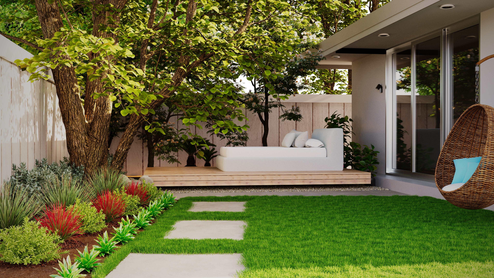

In This Article
- Define What Easy Care Means in Your Home
- Snake Plant
- ZZ Plant
- Pothos
- Heartleaf Philodendron
- Spider Plant
- Cast Iron Plant
- Create a Simple Care Routine
- Do Not Overcare Beginner Plants
- Frequently Asked Questions
- Conclusion
Define What Easy Care Means in Your Home
A low-maintenance plant is one that matches your conditions. A drought-tolerant species is not automatically easy if the room is too dark, and a shade-tolerant plant may still fail when watered incorrectly.
For easy-care indoor plants for beginners, this part of the plan deserves attention before you buy materials or change the space. Use define what easy care means in your home as a checkpoint: look at the actual conditions, note practical limits, and decide what success should look like in daily use. Photographs, measurements, and a short written note can make the decision easier to review later. A deliberate approach also reduces the chance of solving one problem while creating another.
After the first change related to define what easy care means in your home, observe the result under normal conditions instead of judging it immediately. Check access, maintenance, comfort, moisture, light, stability, and seasonal effects where they are relevant to easy-care indoor plants for beginners. Small adjustments made from real observation are usually more useful than adding several new features at once. Keep the solution simple enough that it can still be maintained months from now.
Snake Plant
Snake plants tolerate irregular watering and a range of indoor light, making them practical for beginners. Let the growing medium dry appropriately and avoid leaving water trapped inside decorative containers.
For easy-care indoor plants for beginners, this part of the plan deserves attention before you buy materials or change the space. Use snake plant as a checkpoint: look at the actual conditions, note practical limits, and decide what success should look like in daily use. Photographs, measurements, and a short written note can make the decision easier to review later. A deliberate approach also reduces the chance of solving one problem while creating another.
After the first change related to snake plant, observe the result under normal conditions instead of judging it immediately. Check access, maintenance, comfort, moisture, light, stability, and seasonal effects where they are relevant to easy-care indoor plants for beginners. Small adjustments made from real observation are usually more useful than adding several new features at once. Keep the solution simple enough that it can still be maintained months from now.
ZZ Plant
ZZ plants store water in thick underground structures and generally prefer drying between waterings. Their glossy foliage needs little grooming beyond occasional dust removal.
For easy-care indoor plants for beginners, this part of the plan deserves attention before you buy materials or change the space. Use zz plant as a checkpoint: look at the actual conditions, note practical limits, and decide what success should look like in daily use. Photographs, measurements, and a short written note can make the decision easier to review later. A deliberate approach also reduces the chance of solving one problem while creating another.

After the first change related to zz plant, observe the result under normal conditions instead of judging it immediately. Check access, maintenance, comfort, moisture, light, stability, and seasonal effects where they are relevant to easy-care indoor plants for beginners. Small adjustments made from real observation are usually more useful than adding several new features at once. Keep the solution simple enough that it can still be maintained months from now.
Pothos
Pothos grows readily in suitable indirect light and can trail from shelves or climb a support. Pruning long stems encourages a fuller appearance, and cuttings can be propagated when healthy.
For easy-care indoor plants for beginners, this part of the plan deserves attention before you buy materials or change the space. Use pothos as a checkpoint: look at the actual conditions, note practical limits, and decide what success should look like in daily use. Photographs, measurements, and a short written note can make the decision easier to review later. A deliberate approach also reduces the chance of solving one problem while creating another.
After the first change related to pothos, observe the result under normal conditions instead of judging it immediately. Check access, maintenance, comfort, moisture, light, stability, and seasonal effects where they are relevant to easy-care indoor plants for beginners. Small adjustments made from real observation are usually more useful than adding several new features at once. Keep the solution simple enough that it can still be maintained months from now.
Heartleaf Philodendron
Heartleaf philodendron is valued for adaptable trailing growth. Provide indirect light, drainage, and watering based on the moisture of the growing medium rather than a rigid calendar.
For easy-care indoor plants for beginners, this part of the plan deserves attention before you buy materials or change the space. Use heartleaf philodendron as a checkpoint: look at the actual conditions, note practical limits, and decide what success should look like in daily use. Photographs, measurements, and a short written note can make the decision easier to review later. A deliberate approach also reduces the chance of solving one problem while creating another.

After the first change related to heartleaf philodendron, observe the result under normal conditions instead of judging it immediately. Check access, maintenance, comfort, moisture, light, stability, and seasonal effects where they are relevant to easy-care indoor plants for beginners. Small adjustments made from real observation are usually more useful than adding several new features at once. Keep the solution simple enough that it can still be maintained months from now.
Spider Plant
Spider plants are forgiving and produce arching leaves and plantlets. Brown tips can have several causes, so review watering, salts, humidity, and root condition before making drastic changes.
For easy-care indoor plants for beginners, this part of the plan deserves attention before you buy materials or change the space. Use spider plant as a checkpoint: look at the actual conditions, note practical limits, and decide what success should look like in daily use. Photographs, measurements, and a short written note can make the decision easier to review later. A deliberate approach also reduces the chance of solving one problem while creating another.
After the first change related to spider plant, observe the result under normal conditions instead of judging it immediately. Check access, maintenance, comfort, moisture, light, stability, and seasonal effects where they are relevant to easy-care indoor plants for beginners. Small adjustments made from real observation are usually more useful than adding several new features at once. Keep the solution simple enough that it can still be maintained months from now.
Cast Iron Plant
Aspidistra is known for tolerating lower light and slower growth. It suits rooms where a large, leafy plant is desired without frequent pruning. Avoid keeping its soil permanently saturated.
For easy-care indoor plants for beginners, this part of the plan deserves attention before you buy materials or change the space. Use cast iron plant as a checkpoint: look at the actual conditions, note practical limits, and decide what success should look like in daily use. Photographs, measurements, and a short written note can make the decision easier to review later. A deliberate approach also reduces the chance of solving one problem while creating another.

After the first change related to cast iron plant, observe the result under normal conditions instead of judging it immediately. Check access, maintenance, comfort, moisture, light, stability, and seasonal effects where they are relevant to easy-care indoor plants for beginners. Small adjustments made from real observation are usually more useful than adding several new features at once. Keep the solution simple enough that it can still be maintained months from now.
Create a Simple Care Routine
Check plants on the same day each week, but water only those that actually need it. Inspect leaves, rotate pots when useful, empty standing water, and remove dead material.
For easy-care indoor plants for beginners, this part of the plan deserves attention before you buy materials or change the space. Use create a simple care routine as a checkpoint: look at the actual conditions, note practical limits, and decide what success should look like in daily use. Photographs, measurements, and a short written note can make the decision easier to review later. A deliberate approach also reduces the chance of solving one problem while creating another.
After the first change related to create a simple care routine, observe the result under normal conditions instead of judging it immediately. Check access, maintenance, comfort, moisture, light, stability, and seasonal effects where they are relevant to easy-care indoor plants for beginners. Small adjustments made from real observation are usually more useful than adding several new features at once. Keep the solution simple enough that it can still be maintained months from now.
Do Not Overcare Beginner Plants
Frequent repotting, constant fertilizer, daily watering, and repeated relocation can create more stress than neglect. Make one change at a time and observe the plant's response.
For easy-care indoor plants for beginners, this part of the plan deserves attention before you buy materials or change the space. Use do not overcare beginner plants as a checkpoint: look at the actual conditions, note practical limits, and decide what success should look like in daily use. Photographs, measurements, and a short written note can make the decision easier to review later. A deliberate approach also reduces the chance of solving one problem while creating another.
After the first change related to do not overcare beginner plants, observe the result under normal conditions instead of judging it immediately. Check access, maintenance, comfort, moisture, light, stability, and seasonal effects where they are relevant to easy-care indoor plants for beginners. Small adjustments made from real observation are usually more useful than adding several new features at once. Keep the solution simple enough that it can still be maintained months from now.
Frequently Asked Questions
Beginners often succeed by choosing a few resilient species and learning their moisture and light patterns. Plant labels are a starting point, but the conditions in your own home determine the final routine.
For easy-care indoor plants for beginners, this part of the plan deserves attention before you buy materials or change the space. Use frequently asked questions as a checkpoint: look at the actual conditions, note practical limits, and decide what success should look like in daily use. Photographs, measurements, and a short written note can make the decision easier to review later. A deliberate approach also reduces the chance of solving one problem while creating another.
After the first change related to frequently asked questions, observe the result under normal conditions instead of judging it immediately. Check access, maintenance, comfort, moisture, light, stability, and seasonal effects where they are relevant to easy-care indoor plants for beginners. Small adjustments made from real observation are usually more useful than adding several new features at once. Keep the solution simple enough that it can still be maintained months from now.
Keep a simple record of watering and location changes during the first month. That small habit makes patterns easier to recognize and helps prevent repeated overcorrection.
Conclusion
Easy-care plants reduce complexity, not responsibility. Match the species to the room, use drainage, check moisture before watering, and keep the routine simple enough to maintain consistently.
For easy-care indoor plants for beginners, this part of the plan deserves attention before you buy materials or change the space. Use conclusion as a checkpoint: look at the actual conditions, note practical limits, and decide what success should look like in daily use. Photographs, measurements, and a short written note can make the decision easier to review later. A deliberate approach also reduces the chance of solving one problem while creating another.
After the first change related to conclusion, observe the result under normal conditions instead of judging it immediately. Check access, maintenance, comfort, moisture, light, stability, and seasonal effects where they are relevant to easy-care indoor plants for beginners. Small adjustments made from real observation are usually more useful than adding several new features at once. Keep the solution simple enough that it can still be maintained months from now.